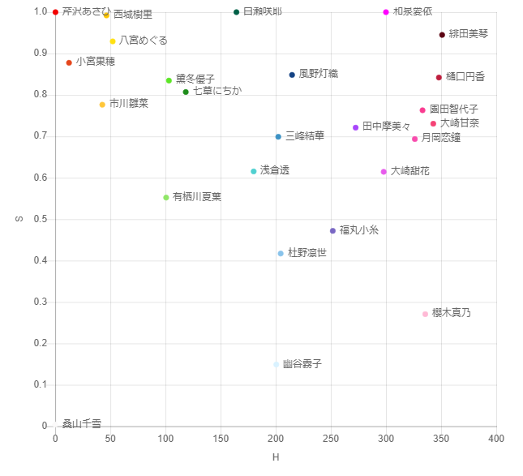
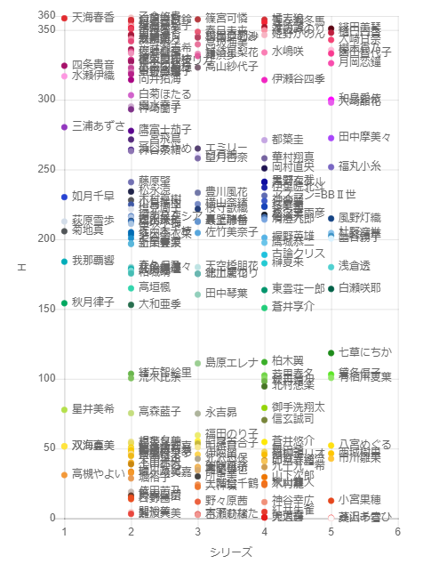

この記事はアイドルマスター Advent Calendar 2020の記事です。
今年の5月にTwitterでイラスト作品での色の選び方を あいうち さんが解説したツイートを拝見しました。
【プロイラストレーターが多用する明度彩度の領域】
— あいうち＠お絵かき侍 (@Aiuti01) May 20, 2020
複数人のプロイラストレーターの作品で、明度彩度だけサンプリングした結果、見えてきた明度彩度の傾向となぜその領域が使用されるかの分析をしてみた。 pic.twitter.com/mnJ4QY0cKY
さらに付け加えますと、ほどんどのプロイラストレーターの絵ではこの領域の明度彩度は徹底的に避けられていました。
— あいうち＠お絵かき侍 (@Aiuti01) May 20, 2020
最近流行りの「色鮮やかな絵」を塗る為にはこの領域の色は明度彩度が暗すぎたり濁りすぎたりするのでしょう。
この領域を選ばないだけでも色の選択は随分楽になると思います。 pic.twitter.com/MtCHX4Ul1Q
私は絵を描かない(描けない)人なので、「色」といえばH(色相)で見てしまいます。それを、色をS(彩度)とV(明度)の視点で見るというのが非常に新鮮に映りました。
で、アイマスといえばイメージカラーです。イメージカラーの分布を同じように見れば、色の選び方がイラストとはどのように違うのか、さらにはイメージカラーを選ぶルールが見えてくるのではないかと考え、分析してみました。
今回の分析では、「イメージカラー」としてim@sparqlのデータを使用しました。なおim@sparqlに登録されている「イメージカラー」の数値は有志が様々なデータソースを参考に作成されたものです。公式がイメージカラーの数値を指定しているわけではありません(ないと思います)。コンテンツ内でアイドルのイメージカラーに具体的に言及しているのって、Colorful days[1]くらいしか知らないんですよね…(インタビュー記事では時々言及されていますが)
各シリーズでのイメージカラーは、次のようなデータソースから作成されています。多分。
※認識が間違っているかもしれません。誤認があれば指摘ください。
つまり何が言いたいかというと、イメージカラーは確定してるわけじゃないから、頓珍漢なこと言ってるかもしれないよ、という予防線です。
ではあいうちさんが作成したグラフと同じように、アイマスのイメージカラーをS(彩度)とV(明度)でプロットしてみます。グラフの作成にはchart.jsを使い、CSVファイルを読み込んでイメージカラーでプロットできる自作ツールを使用しました。
カラフルなグラフっていいですよね。
で、プロットしてみたのはいいものの、残念ながらあまり分析につながりませんでした。
アクセントカラーゾーンからバランスよく選ばれており、それに＋白＋黒＋ピンクという感じで色がピックアップされています。あいうちモデルに合致しているように見えます。美希の色はXBOXグリーンが由来のはずですが、ちゃんとばらけて配置されています。色が被らないようにちゃんと設計されているように見えます。
色を先に決めて、各キャラクターに割り振ってデザインに反映したかんじでしょうか？
右上三角のゾーンに集中して配置されています。あいうちモデルでは使わないほうがよいとされている右下のゾーンにも多くのアイドルが配置されており、あいうちモデルには合致していないように見えます。ちょっと興味深いのは、明度Vがカンストしたアイドルがいないこと。彩度Sがカンストしたアイドルは何人かいるんですが。何ででしょうね？分かりません。
キャラクターデザインがあって、そこからイメージカラーを選んだのかな？シンデレラはキャラが順次追加されていったので、イメージカラーをシリーズ全体で決めるのは難しいと思います。デザイナーも複数いるでしょうし。
あいうちモデルで使わないほうがよいとされている領域をきっちり避けた上でバランスよく分布しています。しかも765ASを補完するような分布です。AS組とシアター組の関係を象徴しているようにも感じられました。
ミリオンは歌織さんと紬を除いて一度にデザインされたのでしょうから、イメージカラーも全体のバランスを見て配置されている感じがします。
シンデレラガールズの分布よりもさらに右上のゾーンに集中しています。しかも彩度S、明度Vともにほぼカンストしているアイドルもいます。強い。男性向けと女性向けで色の選び方も違うのかもしれません。
SideMもシンデレラと同じように順次追加されたキャラクターデザインをもとにイメージカラーが追加されたのでしょうかね？
全般的に明度Vが高い。明度Vや彩度Sがカンストしている人もけっこういる。しかも愛依はSとVがどちらもカンストしている。かなり強い色の選び方をしているようです。
シャイニーカラーズでのイメージカラーの選び方はかなり特徴的です。キャラクターデザインとは全く独立し、何等かの裏ルールでイメージカラーを選んだのではないかと思われます。色相Hの値が、あさひ=0(RGBのR), 透=180(CMYのC), 愛依=300(CMYのM)だったりして結構恣意的な感じです。どんなルールなのかは分かりませんが…
いまいちよく分かりませんでした。
あいうちモデルではSとVに着目しました。せっかくなので色相Hも見てみます。シリーズごとに色相Hでプロットしました。

これを見ると、色相H=120~150の範囲がどのシリーズでもごっそり抜けていることが分かります。
H=130の色はこんな感じの黄緑色です。なぜこのあたりの色は使われていないのでしょうか？
Twitterでつぶやいたところ、紅木 弘さんからコメントを頂きました。
#アイマス統計
— 紅木 弘@統計屋(自称) (@hiroshiakagi398) November 16, 2020
765ASとミリオンのアイドルたちのイメージカラーと髪色の色相に関する相関図です。
同図より，イメージカラーと髪色には同じような色を用いるという因果関係が見て取れます。
なお，実際は彩度と明度の関係で黒や白っぽい色になることもあります。https://t.co/qLYwNsAuli pic.twitter.com/lG9QjK2wi6
#アイマス統計
— 紅木 弘@統計屋(自称) (@hiroshiakagi398) November 16, 2020
緑がイメージカラーのアイドルは複数人いますが，緑髪のアイドルは島原エレナと徳川まつり，永吉昴くらいです。
さらに，765AS・ミリオンの髪色の割合を見てみると，緑は他の色に比べ少ない。
つまり，緑はイメージカラーと髪の色の因果関係が低いと考察されます。 pic.twitter.com/jKgcyK8v0r
#アイマス統計
— 紅木 弘@統計屋(自称) (@hiroshiakagi398) November 16, 2020
すなわち，下記TLにてイメージカラーに緑色が少ないのは，緑髪のアイドルが少ないことに起因しています。https://t.co/qLYwNsiSWI
#アイマス統計
— 紅木 弘@統計屋(自称) (@hiroshiakagi398) November 16, 2020
では，なぜ緑髪が少ないのか。
これについてはつばめ様( @kinako003 )や牧田翠様( @MiDrill )が過去にエロゲのヒロインで調査したときもそうであったが，緑髪のヒロインは少ない傾向にある。
つまり，緑髪が少ないのはアイマスだけのことではない。https://t.co/EhtPFkFbfE
「緑はいらない子」などと言われることもあるように，業界的にも緑髪のヒロインはつくりにくい風潮があるのかもしれない。https://t.co/GjTSIhJPgp
— 紅木 弘@統計屋(自称) (@hiroshiakagi398) November 16, 2020
アイマス各シリーズで、アイドルのイメージカラーのH・S・V値がどのように分布しているのか調査し、以下の知見を得た。
[1] 中村恵(作詞), Colorful Days, 2008
[2] あいうち＠お絵かき侍 (@Aiuti01) , Twitter, 2020
[3] 紅木 弘@統計屋(自称) (@hiroshiakagi398), Twitter, 2020